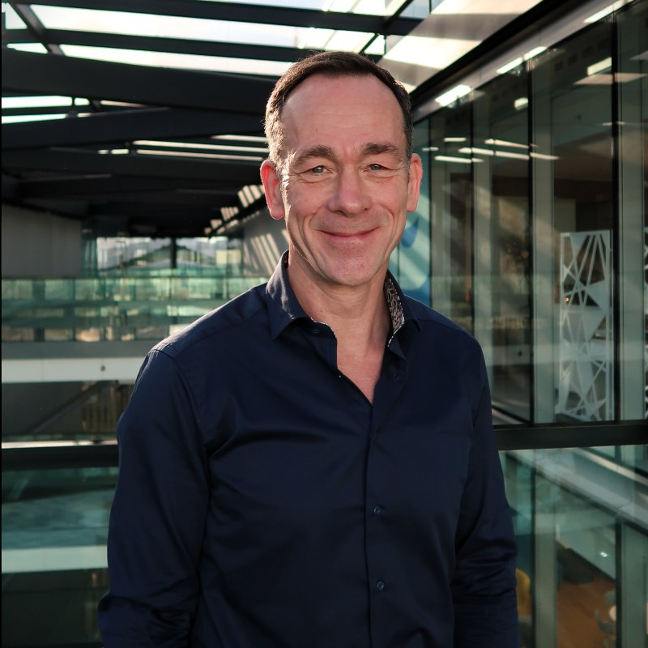

Executive coaching
One to one coaching for senior leaders, often through the step up into a bigger role. Recent work includes newly appointed C suite leaders across sales, technology, HR, finance and operations.
Coaching leaders since 1999
Executive coaching, team development and leadership programmes from Nic Brocklebank, built on twenty four years of helping people grow.
Start a conversationThree strands of work, usually blended to fit the organisation rather than sold off a shelf.
One to one coaching for senior leaders, often through the step up into a bigger role. Recent work includes newly appointed C suite leaders across sales, technology, HR, finance and operations.
Working with intact teams over months, not away days that fade by Friday. One example is a twelve month Insights Discovery journey with the Quality team at Jaguar Land Rover.
Designing and delivering development at scale, from talent strategy to top team training. That has ranged from Visa Europe's talent programme to leadership development for MBA students at London Business School.
A sample of coaching and consulting projects from the last two decades. Sectors vary, the thread is the same, helping people and organisations perform.


“Companies are actually living organisms, not machines. We keep bringing in mechanics, when what we need are gardeners.”
Peter Senge, The Fifth Discipline
I started in sport. A sports science degree taught me how the mind and body respond to pressure and change, and a masters in human resources widened that view to whole organisations. The mix has shaped everything since, psychology and physiology tied to a strong preference for what actually works.
Over twenty four years I've coached as an external practitioner, worked inside organisations as an organisation development business partner, and spent years with the performance consultancy Lane4. Sport never left, either. I coach rugby and skiing, test athletes for UK Anti-Doping, and run a busy bicycle repair business on the side.
Clients tend to describe the coaching as insightful and challenging in equal measure. My job is to understand what makes your organisation tick, then work with people's strengths and development areas honestly enough that performance moves.
Find me on LinkedInTell me a little about your organisation and what you're wrestling with. No form of words needed, a couple of lines is plenty, and I'll come back to you personally.